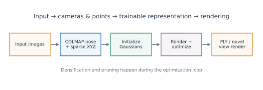
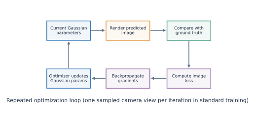
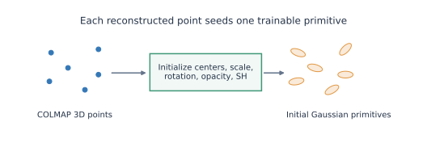
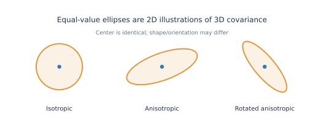
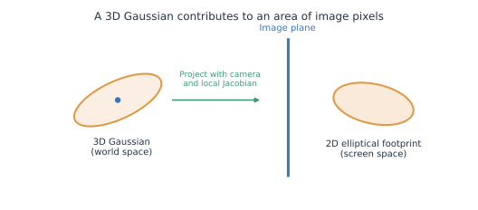
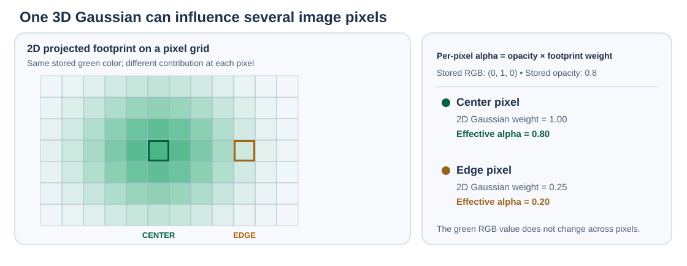
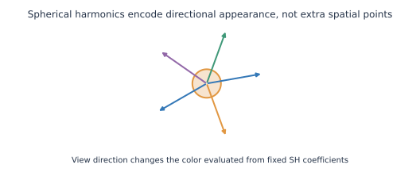
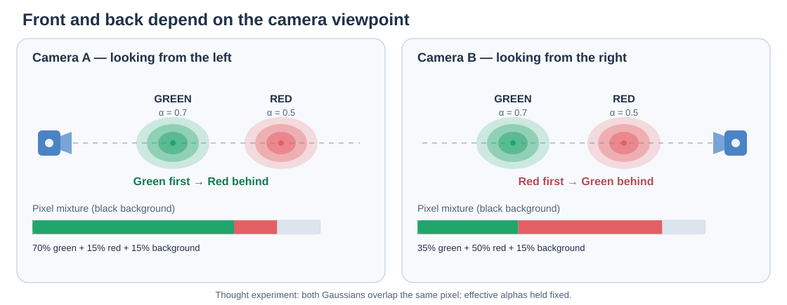
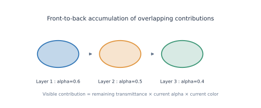
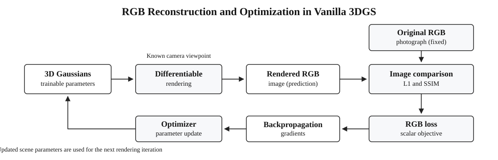

Vanilla 3D Gaussian Splatting — From Initialization to a Trained Scene
An implementation-aware, visual, mathematical, and interactive tutorial using an indoor-scene reconstruction.
Before you start
Prerequisites: Computer Vision Fundamentals explains cameras, COLMAP, radiance, and general CV vocabulary. 3DGS Fundamentals introduces Gaussian primitives, opacity, covariance, and splatting. This page explains how the original Vanilla 3DGS algorithm actually works, without re-teaching the prerequisites.
Audience: ML practitioners learning 3D reconstruction. Equations are accompanied by operational explanations and interactive exercises. The examples use the official Inria 3DGS implementation; defaults can differ across versions and forks.
Jump to: Pipeline · Initialization · Gaussian parameters · Projection · SH color · Tiles · Compositing · Loss · Densification · PLY · Experiments.
1. The complete pipeline

At training time:
- Estimate camera intrinsics, poses, and sparse points with COLMAP (or another compatible reconstruction method).
- Create an initial trainable 3D Gaussian for each seed point.
- Select a training camera and render its predicted RGB image from all relevant Gaussians.
- Compare the rendering with that camera's fixed reference photograph.
- Backpropagate the image loss through the differentiable rasterizer; update Gaussian parameters with an optimizer.
- Periodically clone, split, and prune Gaussians according to prescribed density-control rules.
- Save a set of trained Gaussians; later, supply a camera to render another view.
The key mental model: a Gaussian is a persistent 3D primitive. An image is a temporary result computed from thousands of such primitives for one camera. Training adjusts the primitives, not independent pixels.

A concrete indoor-scene example
For the indoor scene used throughout these notes, the sparse COLMAP reconstruction provided 38,558 initial points, and the trained 30,000-iteration Vanilla 3DGS PLY contains 637,141 Gaussians. These are real counts from this specific experiment, not universal benchmarks. The number grew because densification can create extra primitives during training.
Iteration is not epoch
One training iteration selects a camera view and updates the scene. An epoch normally means a pass through a dataset. A 30,000-iteration run is not 30,000 epochs.
2. From COLMAP points to trainable Gaussians

COLMAP provides camera calibration/poses, registered photographs, and sparse 3D points. The 3DGS model is constructed after that reconstruction. It does not inherit a ready-made set of optimized Gaussians from COLMAP.
What exactly gets initialized?
| Gaussian attribute | Typical official initialization | Why |
|---|---|---|
| Center \(\boldsymbol\mu\) | A sparse COLMAP 3D point | Put initial primitives in plausible scene locations |
| SH color (degree 0) | Transform the seed point's RGB color to the constant SH coefficient | Start with approximate observed appearance |
| Higher-order SH color | Zeros | Let training discover view-dependent color |
| Three scales | Isotropic initial spread estimated from neighbor-point distances | Give seed points finite extent |
| Rotation | Identity quaternion | Begin without an arbitrary orientation |
| Activated opacity | \(0.1\) (stored as logit) | Allow compositing and opacity learning |
These values are starting points, not final properties. Subsequent optimization can move the centers, flatten or elongate the Gaussians, rotate them, and alter opacity and color.
The reference implementation computes approximate squared nearest-neighbor distances with simple-knn, clamps small values, and initializes each log-scale using \(\log\sqrt{d_i^2}\). Its initial rotation is \((1,0,0,0)\), and the initial opacity parameter is \(\operatorname{logit}(0.1)\). Source: scene/gaussian_model.py.
Not one Gaussian per photograph pixel
Seed Gaussians correspond to 3D sparse points, not the pixels of any particular image. A single persistent Gaussian can be observed at different screen coordinates in many cameras.
3. Gaussian parameters and 3D covariance
A trained Gaussian has a center \(\boldsymbol\mu\), three scale parameters, a rotation quaternion, opacity, and SH appearance coefficients. These are different trainable quantities with different effects on the rendering.
Stored parameters versus activated values
| Stored in PLY | Conversion for rendering | Meaning |
|---|---|---|
x, y, z |
Used directly | World-space Gaussian center |
scale_0, scale_1, scale_2 |
\(s_k=\exp(\tilde s_k)\) | Positive directional standard deviations |
rot_0 ... rot_3 |
Normalize quaternion \(q/\lVert q\rVert\) | Ellipsoid orientation |
opacity |
\(o=\operatorname{sigmoid}(\tilde o)\) | Base opacity in \((0,1)\) |
f_dc_*, f_rest_* |
Evaluate spherical harmonics | View-dependent RGB appearance |
Let \(R(q)\) denote the rotation matrix of the normalized quaternion. Then
A spatial Gaussian's influence at location \(\mathbf x\) is often visualized using
Its ellipsoidal level surfaces are not hard physical boundaries. The three activated scales control thickness and stretching in local directions; rotation controls those directions in world space; opacity controls the strength of the subsequent splat.

Practical mental picture: a broad, thin Gaussian can approximate part of a chair seat; a narrow, elongated Gaussian can approximate a leg. These are scene approximations, not object labels or physically rigid pieces.
4. Projecting a 3D Gaussian to 2D

This is the bridge from the 3D representation to the 2D image. We calculate a screen-space center and a screen-space shape for a Gaussian at a selected camera.
4.1 Project the Gaussian center
After applying the world-to-camera transform, let the center be \(\boldsymbol\mu_c=(X,Y,Z)^\top\). Under an ideal pinhole camera,
For example, \(f_x=600\), \(X=1\), \(Z=5\), \(c_x=320\) gives \(u=440\) pixels. That is the projected center, not the complete footprint. Camera conventions and intrinsic assumptions are explained in CV Fundamentals.
4.2 Project its shape, not just its center
Let \(W\) be the rotational part of the world-to-camera transform and \(J\) the Jacobian of the perspective projection evaluated at \(\boldsymbol\mu_c\):
A first-order approximation to the projected \(2\times2\) covariance is
The rasterizer also handles practical filtering and numerical details; the reference implementation adds a small screen-space low-pass term to the covariance. The resulting footprint depends on the camera: a Gaussian can look long from one angle and nearly circular from another.
4.3 Turn the 2D covariance into a pixel contribution
Write the difference between pixel center \(\mathbf p\) and projected center as \(\boldsymbol\delta=\mathbf p-\mathbf m_{2D}\). The footprint weight is approximately
The real rasterizer also culls extremely small contributions. The same Gaussian can influence several adjacent pixels with different effective alpha values.

Try it: Move a Gaussian relative to a camera
Open projection explorer separately.
The explorer is pedagogical rather than a reproduction of every CUDA covariance/clamping detail.
5. Spherical harmonics: view-dependent appearance

A Gaussian has one location, scale, rotation, and set of SH coefficients; those stored parameters do not change merely because we move the camera. Yet the color evaluated from its SH coefficients can change with the viewing direction.
For a unit direction \(\mathbf d=(d_x,d_y,d_z)\) pointing from the camera toward the Gaussian, the degree-3 SH color uses 16 real basis functions for each RGB channel:
- \(Y_k\) is a fixed direction-dependent basis function.
- \(\mathbf a_k\in\mathbb R^3\) is a learned coefficient for R, G, and B.
- Degree 0 uses one coefficient per channel (the constant component).
- Degree 3 uses 16 coefficients per channel, or 48 appearance values per Gaussian.
The constant coefficient is learned from point RGB at initialization; the remaining 45 coefficients start at zero. The official trainer starts with active degree 0 and increases the active SH degree at intervals of 1,000 iterations, until the configured maximum (typically 3). Source: train.py.
Worked first-order example
For one color channel and just two illustrative basis terms, imagine
Moving the camera changes \(Y_1(\mathbf d)\) while \(a_0\) and \(a_1\) remain fixed. This is how a trained Gaussian can change its apparent color across viewpoints without storing separate RGB values for every camera.
Interactive experiment: view direction and apparent color
Rotate the viewing direction. The plotted color intensity changes from a fixed set of illustrative coefficients; the Gaussian's parameters do not change.
This shows **directional dependence**, not the actual learned coefficients in your PLY. Use the real-data notebook below to inspect trained SH values.
Color is not opacity
SH supplies a Gaussian's RGB value for the current camera direction. The projected spatial footprint and opacity determine how strongly that color enters each pixel, after accounting for nearer Gaussians.
6. Tile-based rasterization: how the GPU finds the relevant Gaussians
Imagine an image of size \(64\times64\) pixels. The reference rasterizer processes it as a grid of \(16\times16\)-pixel tiles: there are \(4\times4=16\) tiles. For a full-resolution image, there can be many more tiles.

A naive renderer would test every Gaussian against every pixel. The tile-based rasterizer avoids most unnecessary tests.
The actual steps
- Project the Gaussian center and covariance to the current camera, estimate a bounded screen-space footprint, and cull irrelevant Gaussians.
- Find its overlapping tile rectangle. If its footprint bounds overlap tiles T5 and T6, both tiles record the Gaussian's ID.
- Emit references, not new Gaussians. A single Gaussian may appear in several tile lists; this is not densification.
- Sort by tile ID and camera depth. The code constructs a combined sort key containing the tile and the Gaussian-center depth.
- Create a list range for each tile, then have the pixel-processing GPU threads read that tile's ordered Gaussian references.
- For each pixel, evaluate spatial weights and alpha, and blend contributions front to back.
The depth ordering uses Gaussian-center depth, which is an approximation rather than an independent exact surface ordering at each pixel. Relevant reference CUDA functions include duplicateWithKeys, identifyTileRanges, and renderCUDA in the differentiable rasterizer.
Interactive experiment: tile coverage
The blue tiles receive a **reference to this Gaussian** because its conservative bounding rectangle overlaps them.
This diagram uses a circular outline for visibility and a square bounding box for tile assignment. An actual 2D Gaussian can be elliptical; the CUDA implementation computes conservative pixel bounds using its projected covariance.
Numerical tile example
Suppose Gaussian G7 projects to \((25,25)\) with a 13-pixel bounding radius. Its rectangle spans approximately pixels 12–38 horizontally and vertically, crossing tile columns 0, 1, and 2 and tile rows 0, 1, and 2. Thus G7 appears in nine tile lists. There is still only one Gaussian G7 in the 3D scene.
Now tile T5 might contain G7 (depth 2), G12 (depth 5), and G4 (depth 8). The rasterizer sorts the references in that order for the tile. It does not sort by a semantic label or by Gaussian color.
7. Visibility and alpha compositing
Tile sorting brings each pixel a candidate list. The pixel then determines each Gaussian's actual opacity at its location and combines the colors in front-to-back order.
For pixel \(\mathbf p\), let \(\alpha_i(\mathbf p)\) be Gaussian \(i\)'s effective alpha, \(\mathbf c_i\) its evaluated SH color, and \(T_i\) the transmittance remaining before that Gaussian:
Then the rendered RGB value, including remaining background, is
Worked example: red in front of blue
A near red Gaussian has \(\alpha_1=0.6\) and \(\mathbf c_1=(1,0,0)\). A farther blue one has \(\alpha_2=0.5\) and \(\mathbf c_2=(0,0,1)\). With a black background,
Why is the blue contribution only 0.2? The front Gaussian leaves transmittance \(T_2=1-0.6=0.4\), so its effective contribution is \(0.4\times0.5=0.2\). Rear objects cannot contribute at full strength through an already opaque foreground.

Try it: interactive compositing
Open the compositing explorer separately.
Distinguish these three: an SH color is an RGB value evaluated from a direction; base opacity is a learned Gaussian parameter; effective alpha varies by pixel due to the Gaussian's projected footprint. They are combined through transmittance.
8. RGB reconstruction loss and backpropagation
This section integrates our formerly separate Vanilla 3DGS Loss Function tutorial, including both of its interactive labs. Readers can follow the loss calculation without switching pages.
Core training objective
The baseline Vanilla 3DGS RGB objective combines L1 image reconstruction and SSIM structural similarity. The default mixing weight is \(\lambda=0.2\). Some newer repository versions additionally support optional depth regularization, which is separate from the basic RGB objective and only applies when configured and valid depth supervision is available.
8.1. What is compared with what?
Imagine a photograph of a chair in an indoor room. COLMAP has estimated the camera pose of that photograph. We use that same camera to render the current Gaussian scene.

Figure: Vanilla 3DGS RGB reconstruction training pipeline. A rendered image is compared with the reference photograph from the same camera viewpoint. The loss is backpropagated through the differentiable renderer to update Gaussian parameters.
Let the original photograph be \(I_v\) and the rendered photograph be \(\hat I_v\) for camera view \(v\). They have the same image dimensions, and pixel \((x,y)\) of one corresponds to pixel \((x,y)\) of the other.
- Original image \(I_v\): fixed training target; its RGB values are not updated.
- Rendered image \(\hat I_v\): computed from the current trainable Gaussian scene and camera.
- Pixelwise difference: measures a mismatch in image space, not a distance between 3D points.
The renderer is a function of the Gaussian parameters \(\theta\) and the known camera \(\mathcal C_v\):
Each Gaussian has a 3D mean (position), a covariance (shape and orientation), an opacity parameter, and view-dependent color parameters represented with spherical harmonics. Their combined projections and alpha compositing produce the rendered RGB image.
8.2. Interactive lab: Compare a reference image with a rendering
In this miniature illustrative indoor scene, a chair has the wrong brightness and horizontal position in the rendered image. Move the controls and observe three images: the fixed reference, the current rendering, and a pixelwise error visualization.
Important: This lab draws a small synthetic image to illustrate the RGB comparison. It is not a full 3D Gaussian rasterizer. The loss functions, however, are computed from the actual image arrays, including a windowed SSIM calculation.
The original is fixed. Change the simulated rendering to see how two standard loss components respond. Click any pixel to inspect its RGB values.
All RGB values are normalized to [0, 1] for loss calculation. SSIM uses 11×11 Gaussian-weighted neighborhoods (σ = 1.5), constants C₁ = 0.01² and C₂ = 0.03², and zero-padding as in the original software SSIM implementation. This tiny test image is only for learning, so numerical SSIM values are not representative of a full-resolution dataset.
The first loss: Mean absolute RGB error (L1)
For RGB images of height \(H\) and width \(W\), mean L1 is:
The images are normalized to \([0,1]\). For example, for a single RGB pixel:
| Channel | Original (0–255) | Rendered (0–255) | Absolute error |
|---|---|---|---|
| Red | 200 | 170 | 30 |
| Green | 160 | 140 | 20 |
| Blue | 120 | 100 | 20 |
Its mean absolute channel error is \((30+20+20)/(3\times255)\approx0.0915\) after normalization. Real training averages this error across every pixel in the selected training image.
L1 is easy to interpret, but independently matching color values does not fully express whether the image has the right local patterns and structure. That motivates the second term.
The second loss: Structural similarity (SSIM)
SSIM compares local neighborhoods of corresponding images. In each local window it uses brightness statistics, contrast statistics, and covariance (how pixel variations agree).
For two local image windows \(x\) and \(y\):
where \(\mu_x,\mu_y\) are local means; \(\sigma_x^2,\sigma_y^2\) are local variances; \(\sigma_{xy}\) is local covariance. The original 3DGS loss utility uses an 11×11 Gaussian window with \(\sigma=1.5\), \(C_1=0.01^2\), \(C_2=0.03^2\), and averages the SSIM map over image pixels and channels.
- A perfect match has SSIM = 1, hence 1 − SSIM = 0.
- Blurred edges, displaced structures, or incorrect local contrast usually decrease SSIM.
- The training objective therefore minimizes \(1-\operatorname{SSIM}\) rather than maximizing SSIM directly.
Explore the distinction
In the image lab, first set the chair brightness to 100% but leave its horizontal position offset. Then set the offset to 0. Watch how a structural misalignment affects both L1 and SSIM even when the chair's RGB values are otherwise correct.
8.3. Combining L1 and SSIM
The core RGB reconstruction objective in original vanilla 3DGS is:
With the default \(\lambda=0.2\):
You can adjust \(\lambda\) in the interactive lab. The combined loss is a scalar, but it was computed from many individual image differences. Its derivative with respect to all trainable Gaussians is obtained using automatic differentiation through the renderer.
Scope of the equation
This page explains the original RGB photometric objective. More recent versions of the official implementation can optionally add inverse-depth regularization when suitable depth supervision is available. That extra term is not part of the simple two-term RGB objective explained here.
8.4. How a pixel's error reaches a Gaussian
A pixel itself is not a trainable variable. The pixel value results from projected Gaussian footprints, their colors, visibility, and front-to-back alpha compositing.
For a pixel \(p\), the renderer can be written schematically as:
Gaussian 1 is in front of Gaussian 2. Adjust their effective pixel opacities and grayscale colors. The target is fixed at 0.75.
L1: 0.280
This applies an illustrative SGD step with learning rate 0.2 to two grayscale color values using one-pixel L1 gradients. Actual 3DGS uses many RGB pixels, view-dependent colors, full rasterizer derivatives, parameter-specific learning rates, and Adam-style optimization. It does not use this toy update rule.
Question 1. If a rendered chair pixel is too dark, which parameter is updated: the pixel or the Gaussians?
The **Gaussians**. Backpropagation computes how their colors, opacities, projected positions, and other trainable parameters affect that pixel and the rest of the image.
Question 2. Why can one Gaussian receive gradients from several different pixels?
Because the Gaussian's projected footprint contributes to a region of the image. Its parameter changes can alter all those pixels simultaneously.
Question 3. If the chair's color is correct but its rendered silhouette is displaced, should the loss already be zero?
No. Corresponding image locations still have different RGB values. L1 detects the mismatch, and SSIM also responds to displaced local structure.
Illustrative scene extent E = 10 world units. The small/large boundary is therefore 0.1. Adjust the quantities used by the reference heuristics.
—
Pruning and size checks in the real code can override a clone/split example. This simulator is a teaching aid, not a preview of the exact training trajectory.
Choose a registered camera and its original RGB image
↓
Compute Gaussian position, covariance, SH color, opacity
↓
Project → assign Gaussians to image tiles → sort references
↓
For each pixel, blend relevant Gaussians front to back
↓
Render RGB image at the chosen camera viewpoint
↓
Compare with the fixed original photograph (L1 + SSIM)
↓
Backpropagate through the renderer
↓
Accumulate position-gradient statistics for density control
↓
When scheduled: clone / split / prune and reset opacity
↓
Optimizer step on the current trainable Gaussian parameters
↓
Repeat for another training camera
from plyfile import PlyData
import numpy as np
ply_path = r"3dgs_outputs_no sam/my_first_scene/point_cloud/iteration_30000/point_cloud.ply"
ply = PlyData.read(ply_path)
vtx = ply["vertex"].data
print("Trained Gaussians:", len(vtx)) # Indoor example: 637141
print("Stored properties:", len(vtx.dtype.names))
print(vtx.dtype.names)
idx = 0
center = np.array([vtx[k][idx] for k in ("x", "y", "z")])
scales = np.exp([vtx[f"scale_{k}"][idx] for k in range(3)])
opacity = 1 / (1 + np.exp(-float(vtx["opacity"][idx])))
q = np.array([vtx[f"rot_{k}"][idx] for k in range(4)])
q /= np.linalg.norm(q)
print("Gaussian", idx)
print("Center:", center)
print("Activated scales:", scales)
print("Activated opacity:", opacity)
print("Normalized quaternion (w,x,y,z):", q)
cameras_json_path = r"3dgs_outputs_no sam/my_first_scene/cameras.json"
import numpy as np
import torch
from utils.sh_utils import eval_sh # Run in the original Gaussian-Splatting repo environment
idx = 0
sh_dc = np.array([vtx[f"f_dc_{k}"][idx] for k in range(3)])
sh_rest = np.array([vtx[f"f_rest_{k}"][idx] for k in range(45)]).reshape(3, 15)
sh = np.concatenate((sh_dc[:, None], sh_rest), axis=1) # (3, 16)
# Illustrative unit camera-to-Gaussian direction (replace with real camera direction)
direction = np.array([0.0, 0.0, 1.0])
color = eval_sh(3, torch.tensor(sh, dtype=torch.float32),
torch.tensor(direction, dtype=torch.float32))
rgb = torch.clamp_min(color + 0.5, 0.0).numpy()
print("Direction-dependent RGB:", rgb)
1. If one Gaussian overlaps six tiles, how many Gaussians does the scene gain?
Zero. Tile overlap creates six references to the same primitive for image rendering, not six new trainable primitives.
2. A Gaussian has a high average projected-position gradient but is small. What will the main densification rule do?
It can clone the Gaussian. The original remains; the new copy adds representation capacity for later optimization.
3. Why does the same trained Gaussian produce different colors when the camera moves?
Its SH coefficients stay fixed, but the viewing direction changes, changing the values of the directional SH basis functions.
4. If the foreground effective alpha is 0.8, what fraction of the background contribution can pass through?
The foreground leaves 0.2 transmittance. Additional farther Gaussians may reduce it further before the background is included.